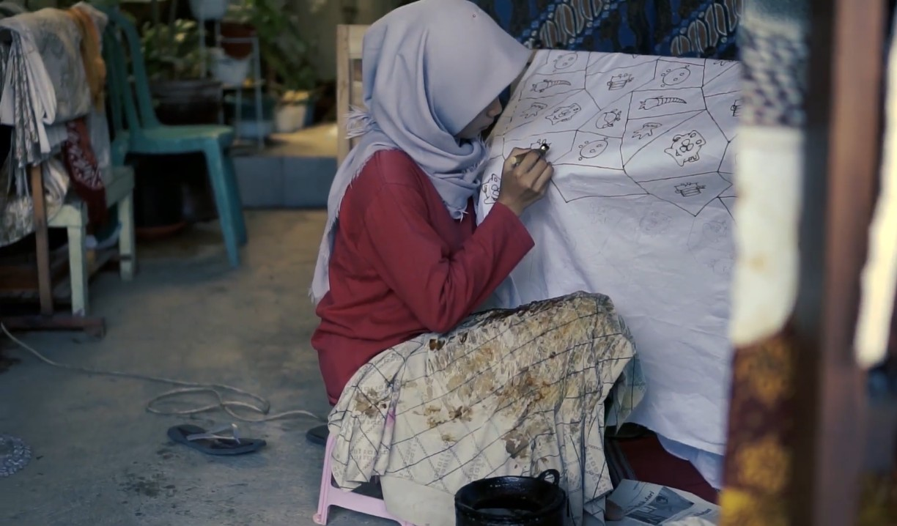
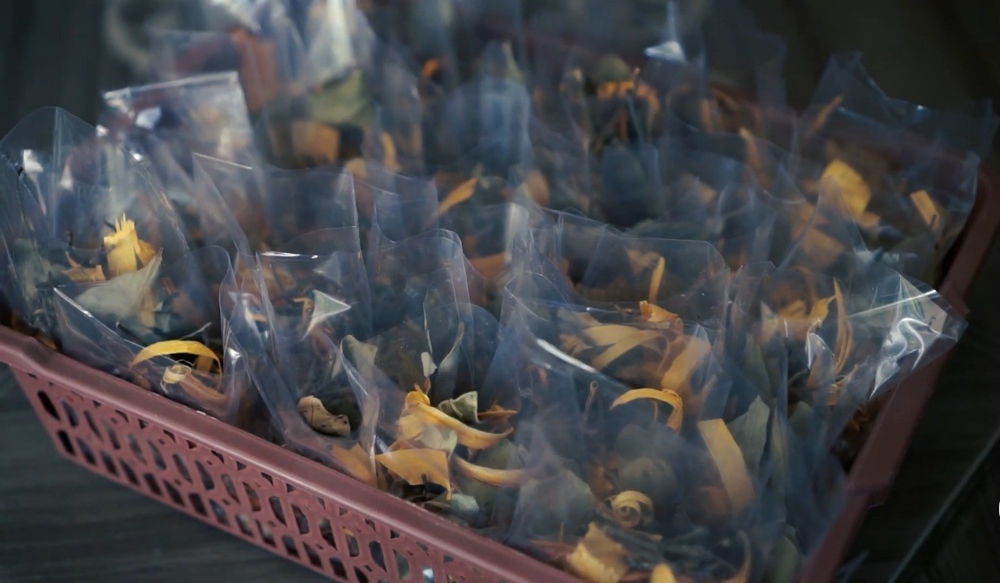
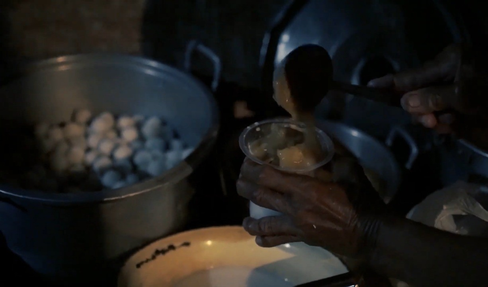

Padukuhan Widoro
Beranda
UMKM
Kegiatan
UMKM Padukuhan Widoro
Batik Setyowati

Alamat: RT 00, Padukuhan Widoro
Lihat Detail
Wedang Uwuh Bejo

Alamat: RT 00, Padukuhan Widoro
Lihat Detail
Bakpia Shafira
Alamat: RT 00, Padukuhan Widoro
Lihat Detail
Jenang Gempol

Alamat: RT 00, Padukuhan Widoro
Lihat Detail